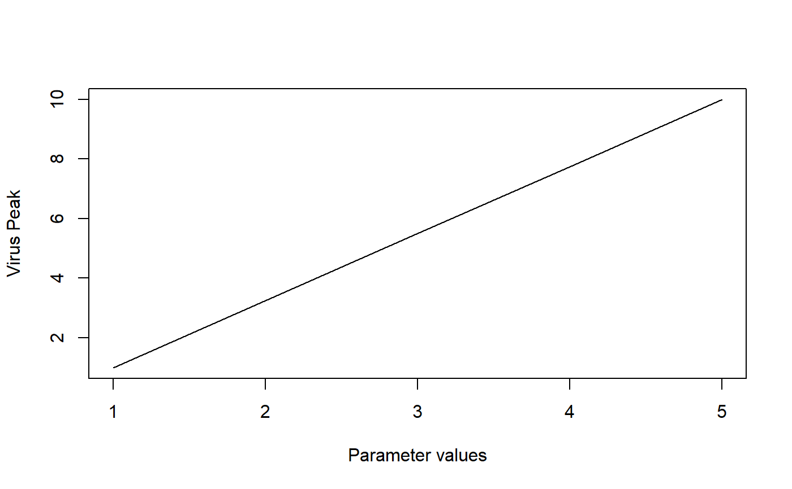

R/simulate_basicvirus_modelexploration.R
simulate_basicvirus_modelexploration.RdThis function simulates the basic virus model ODE for a range of parameters. The function returns a data frame containing the parameter that has been varied and the outcomes (see details).
simulate_basicvirus_modelexploration(
U = 1e+05,
I = 0,
V = 1,
n = 10000,
dU = 0.1,
dI = 1,
dV = 2,
b = 2e-05,
p = 5,
g = 1,
tstart = 0,
tfinal = 100,
dt = 0.1,
samples = 10,
parmin = 1,
parmax = 10,
samplepar = "p",
pardist = "lin"
): Starting value for uninfected cells : numeric
: Starting value for infected cells : numeric
: Starting value for virus : numeric
: Rate of new uninfected cell replenishment : numeric
: Rate at which uninfected cells die : numeric
: Rate at which infected cells die : numeric
: Rate at which virus is cleared : numeric
: Rate at which virus infects cells : numeric
: Rate at which infected cells produce virus : numeric
: Possible conversion factor for virus units : numeric
: Start time of simulation : numeric
: Final time of simulation : numeric
: Times for which result is returned : numeric
: Number of values to run between pmin and pmax : numeric
: Lower value for varied parameter : numeric
: Upper value for varied parameter : numeric
: Name of parameter to be varied : character
: spacing of parameter values, can be either 'lin' or 'log' : character
The function returns the output as a list, list element 'dat' contains the data frame with results of interest. The first column is called xvals and contains the values of the parameter that has been varied as specified by 'samplepar'. The remaining columns contain peak and steady state values of bacteria and immune response, Upeak, Ipeak, Vpeak, Usteady, Isteady and Vsteady. A final boolean variable 'steady' is returned for each simulation. It is TRUE if the simulation reached steady state, otherwise FALSE.
##this code illustrates how to do analyze a simple model. A simple 3 compartment ODE model (the basic virus model introduced in the app of that name) is simulated for different parameter values. This function runs the model for a range of values for any one parameter, while holding all other paramter values fixed. The user can specify which parameter is sampled, and the simulation returns for each parameter sample the peak and final value for U, I and V. Also returned is the varied parameter and an indicator if steady state was reached.
The parameter dt only determines for which times the solution is returned, it is not the internal time step. The latter is set automatically by the ODE solver.
This function does not perform any error checking. So if you try to do something nonsensical (e.g. specify negative parameter values or fractions > 1), the code will likely abort with an error message.
See the shiny app documentation corresponding to this simulator function for more details on this model.
# To run the simulation with default parameters just call the function:
if (FALSE) res <- simulate_basicvirus_modelexploration()
# To choose parameter values other than the standard one, specify them, like such:
res <- simulate_basicvirus_modelexploration(samples=5, samplepar='dI', parmin=1, parmax=10)
# You should then use the simulation result returned from the function, like this:
plot(res$dat[,"xvals"],res$data[,"Vpeak"],xlab='Parameter values',ylab='Virus Peak',type='l')
